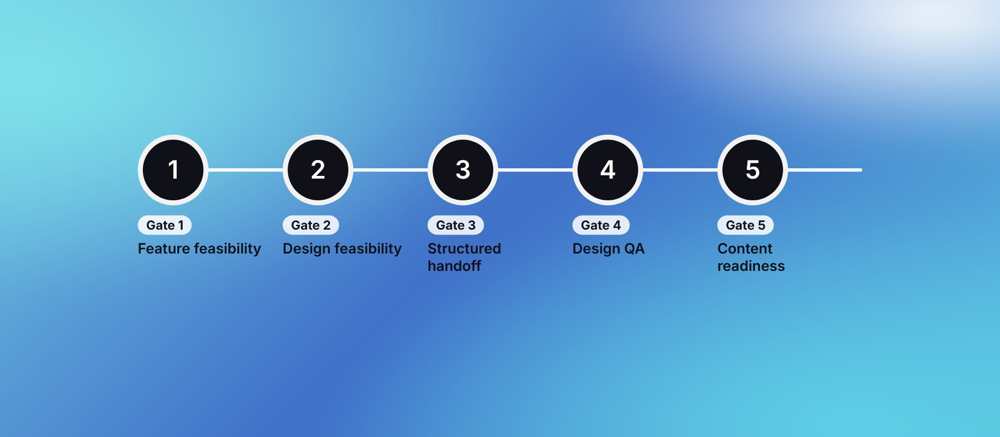

Making design buildable
Introduced mandatory design–development gates that catch feasibility problems while redesign is still cheap, not after the client has signed off.

Outcomes
The problem
Design and engineering worked as separate functions. Designs went to the client, got signed off, and only then reached engineering, when it was too late to influence anything. Feasibility was judged after commitments were made.
"Handoff" meant sharing screens. Copy often arrived after the UI was built, and real word counts broke containers and pages. Clients rarely pay for that kind of rework, so it came out of margin. One complex project absorbed more than 36 manweeks of unplanned, unbilled development buffer.
There was a cultural gap too. Designers read engineering feedback as diluting their work, and engineers saw designs drawn without regard for build effort.
The underlying issue was systemic. Critical delivery decisions depended on individual experience and project-by-project habits instead of a consistent operating model.
The gates
Handoff stopped being a file-sharing event and became a governed delivery milestone.
Each gate sits where a change is still cheap. Project managers own adherence; I joined internal kickoffs on design–development projects to walk teams through them.
- Gate 1Feature feasibilityEnd of discovery: IA and feature list reviewed with development
- Gate 2Design feasibilityBefore any client presentation: development reviews wireframes and UI
- Gate 3Structured handoffComplete only when engineering accepts it, not when design shares files
- Gate 4Design QADesigners review the live build against the approved design
- Gate 5Content readinessReal copy by the wireframe stage; no placeholders go to development
Why content is a gate. Layouts designed around placeholder copy break when real text arrives. Clients now start finalising copy at the wireframe stage, and where it's still unresolved, PMs raise the delivery impact with the client instead of silently passing the risk to development.
The questions the design feasibility review asks
- Can we build this within the scoped timeline?
- Is there a reusable component or established library that keeps the same intent?
- Do complex interactions, animations or custom widgets add build risk?
- Which technical decisions must be made before the design is committed?
The aim isn't to limit design ambition. It's to keep the intent while making effort and risk visible early.
What the design feasibility gate catches
| The design proposed | What development suggested |
|---|---|
| Nested swipe carousels | Paginated scrolling that behaves the same on every device |
| A calendar widget built from scratch | A configurable open-source component |
| A new button, card or form style on every screen | A small set of reusable components, faster to build and test |
| Four or more font weights and styles in one layout | Two or three weights from one family |
| Bespoke charts with angled bars and floating labels | A chart library, customised within its limits |
In each case the design idea wasn't wrong. It needed to fit the build time.
The handoff checklist
Gate 3 runs on a shared template every project copies. It has three parts: a project summary with every file, link and owner; a 22-point checklist across seven categories, each with the reason it matters to engineering; and a screen-by-screen log of sign-off and handover dates.
- File and page organisation
- Components and design system
- Design tokens and style guide
- Responsive behaviour
- Screens and states
- Annotations and documentation
- Assets and exports
Alongside it, knowledge-transfer calls are recorded and saved to a shared drive, and developers log edge cases and open questions as comments on the design file.
Download the checklist (.xlsx)When a gate was skipped
On one project, development came into scope only in the last week of UI, and the design feasibility review didn't happen. The UI included animations that changed with user input. Simple motion ships easily as Lottie, but interactive, state-based animation is better built in Rive, and nobody had flagged it.
The result was 121 extra hours (about 3.5 weeks) of rework and a request for the client to buy a Rive licence late in the project.
I treated it as a process miss, not a tooling one, and turned it into a rule for every PM: classify animations as motion-only or interactive during UI planning, raise interactive work with sales and the client early, and request an engineering review for animation-heavy UI even when development isn't in scope.
Making it stick
- Pilot first. The gates ran on 4 projects. I gathered what felt like overhead and adjusted before the studio-wide rollout.
- Explain the why, then hold the line. When teams started skipping the design gate, I wrote to the PM team with real examples of what it catches, and made scheduling the joint review the PM's job.
- Make review easy. A dedicated channel for screen-review requests, so asking development for a check takes one message.
- Learn on purpose. I set up the studio's first retrospectives on development projects. PMs logged weekly notes on scope shifts, estimation gaps, handoff friction, resourcing, sales support, context gaps and gate adherence.
The operating model
- Prevent
- Standardise
- Assign accountability
- Observe
- Improve
- Prevent
- Catch feasibility, content and dependency risks before they become expensive build problems
- Standardise
- Define what good handoff and QA look like through mandatory gates and a shared checklist
- Assign accountability
- PMs own gate adherence; design and development own their inputs
- Observe
- Track friction, estimation gaps, scope changes and exceptions every week
- Improve
- Use retrospectives to turn one project's lessons into changes to the shared workflow, which feeds back into Prevent
Handoff isn't complete when design shares the files. It's complete when engineering accepts them.